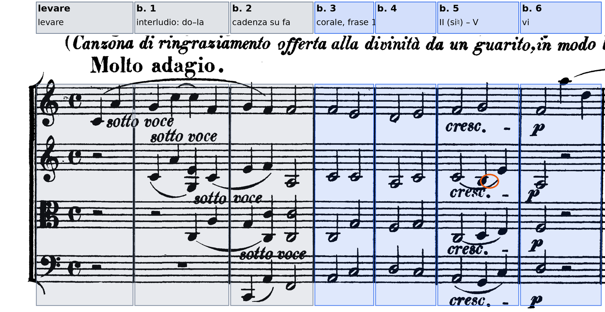

Due modi di rientrare nel sistema modale senza uscire dall’Ottocento: il corale «in modo lidio» di Beethoven (1825) e la sezione centrale della prima Gymnopédie di Satie (1888), dove la tonalità di re perde per dieci battute la sua sensibile.
il recupero e l’elaborazione del sistema musicale caratterizzato dalle scale diatoniche naturali in uso nel Medioevo e nel Rinascimento
D. D’Urso, C. Bertolini, Il linguaggio della musica, 5° anno, p. 238
B4Oltre la tonalità, Lezione 16 «La modalità diatonica», pp. 238–241
D. D’Urso, C. Bertolini, Il linguaggio della musica, 5° anno (Mondadori Education 2022): i sette modi naturali (p. 238), il confronto con le scale maggiore e minore e le note modali (p. 240), le successioni armoniche modali secondo Persichetti (p. 241).
Modo. Una scala diatonica di sette suoni riferita a una nota d’appoggio, la finalis; la tonalità ha selezionato fra i modi diatonici il modo di do (ionico) e il modo di la (eolio), «chiamati poi rispettivamente maggiore e minore» (D’Urso, Bertolini, p. 238).
Nota modale. Il suono che distingue un modo dalla scala maggiore o minore di riferimento: «il modo lidio suona come una scala maggiore con il grado melodico 4 innalzato», il misolidio come una maggiore con il 7 abbassato, il dorico come una minore naturale con il 6 innalzato (p. 240).
Triade modale. Per conferire a un brano il colore di un modo occorre anzitutto «evitare le armonie che contengono il tritono», che «suonano come accordi dominantici», e affermare il modo con la triade di tonica e con «gli accordi contenenti la nota modale» (p. 241, da V. Persichetti). Nel lidio di fa la nota modale è il si♮, e la triade modale più caratteristica è il II maggiore, sol–si–re.
Riconoscere il modo dalla scala e non dal centro. I sette suoni di fa lidio sono quelli di do maggiore: ciò che decide è il suono su cui la musica si appoggia (le cadenze, il basso, la nota finale delle frasi) e l’assenza del si♭ che in fa maggiore servirebbe alla dominante con settima. Una frase che si chiude su do con il si♮ al soprano è in do maggiore; una frase che si chiude su fa senza mai toccare il si♭ è lidia.
Le due musiche di questa lezione si trovano agli estremi del secolo: nel 1825 il modo è dichiarato nel titolo e dipende da un modello antico; nel 1888 non è dichiarato e compare dentro un brano che ha l’armatura di re maggiore.
Si ascolta il primo Molto adagio e l’inizio della sezione seguente. Durante l’ascolto si annota: 1. quante volte le quattro parti si muovono insieme in note lunghe, e che cosa le separa; 2. se fra una frase e l’altra la musica si ferma sempre sullo stesso accordo; 3. che cosa cambia (metro, tempo, carattere, centro) quando inizia la sezione successiva.
1. Le frasi del corale, in minime, sono cinque; ciascuna è preceduta da un breve interludio in semiminime nel quale le voci entrano in imitazione. 2. No: le frasi non si chiudono tutte sul fa, e la prima termina su un accordo di re minore (b. 6, slide seguente). 3. La sezione Andante che segue è in 3/8 e in re maggiore, e porta la didascalia «Neue Kraft fühlend» («sentendo nuova forza»): il colore modale lascia il posto alla tonalità e a un metro di danza. Carrozzo descrive così il contrasto fra il «colore arcaico» del lidio e il «più danzante metro 3/8» delle sezioni in Andante (Storia della musica occidentale, vol. 2, § 31.2, pp. 431–432).
Il movimento comincia in levare con una sola voce. Il primo violino suona do4–la4, una sesta maggiore ascendente, e prosegue sol4–do5–fa4 nella b. 1; a distanza di due movimenti il secondo violino ripete la stessa sesta all’unisono (do4–la4, b. 1), poi la viola un’ottava sotto (do3–la3, b. 1, terzo movimento) e il violoncello due ottave sotto (do2–la2, b. 2). L’interludio è dunque un’esposizione imitativa a quattro voci, con entrate ogni due movimenti, alla maniera di un preludio corale. Gli accordi che le voci formano sui movimenti sono do maggiore e fa maggiore, e l’interludio si chiude sul fa (b. 2: fa2, do3–do4, la3, fa4). Nel levare e nelle bb. 1–4 il quarto grado non compare affatto: né si♭ né si♮. La successione do–fa, che in fa maggiore sarebbe una cadenza autentica, qui avviene senza la settima del primo accordo, e quindi senza il suono che deciderebbe fra maggiore e lidio.
Dalla b. 3 le quattro parti procedono insieme in minime. È la prima delle cinque frasi della melodia che Carrozzo descrive come «quasi un corale armonizzato» (vol. 2, p. 432): il primo violino canta fa4–mi4 | re4–mi4 | fa4–sol4 | fa4, per grado congiunto e nell’ambito di una quarta. Gli accordi sono fa con la terza al basso e do (b. 3), re minore e do (b. 4), di nuovo fa con la terza al basso (b. 5). Alla b. 5, sul terzo movimento, il basso scende al sol2 e il secondo violino tocca il si♮3: la triade sol–si–re, unica occorrenza del si in queste battute, è il secondo grado maggiore, cioè la triade che contiene la nota modale del lidio. Segue la triade di do sul quarto movimento, e la frase si chiude alla b. 6 sulla triade di re minore (re3, fa3, la3, fa4), mentre la melodia torna al fa4. Letti in fa, gli accordi della cadenza sono II–V–vi: lo schema di una cadenza d’inganno, in cui il quinto grado procede al sesto invece che al primo.
Il lidio, in queste sei battute, non è dunque affermato da una scala esposta, ma da due assenze e da una presenza: manca il si♭, manca un accordo di dominante con settima (do–mi–sol–si♭) che porterebbe la frase in fa maggiore; compare una volta il si♮, nel posto in cui una cadenza tonale avrebbe il quarto grado del basso o la sottodominante. Il centro di fa è affermato dall’interludio e dalla melodia del corale, che comincia e finisce sul fa; il basso, che conclude sul re, lo lascia in sospeso. Natoli, nelle indicazioni per l’analisi di questo movimento, segnala proprio la «commistione tra pensiero modale e tonale», le funzioni di finalis e di repercussio nelle sezioni e la scrittura contrappuntistica (Percorsi di analisi musicale, «Linee guida e consultazioni di fine corso»).

Successione nella quale l’accordo di dominante, invece di procedere alla tonica, procede a un altro accordo, di norma il sesto grado (V–vi). Qui il «quinto grado» è una triade di do senza settima, e la cadenza d’inganno, invece di eludere una risoluzione attesa, sposta la chiusa della prima frase sul re minore, il suono che il corale toccherà di nuovo nelle frasi seguenti.
Leggere le bb. 3–5 in do maggiore perché gli accordi di do e il si♮ ci sono, e chiamare la b. 5 «V/V–V in do». Una lettura in do avrebbe bisogno di una cadenza su do, che non c’è: la frase comincia e finisce sul fa nella melodia, l’interludio si chiude sul fa, e il sol maggiore non procede al do come dominante della dominante con la sua settima, ma vi passa per grado nelle voci.
La didascalia del movimento, scritta da Beethoven in tedesco sull’autografo, è accompagnata nella stampa dalla traduzione italiana, aggiunta da un’altra mano: «Canzona di ringraziamento offerta alla divinità da un guarito, in modo lidico». Carrozzo spiega che l’indicazione riguarda le sezioni in Molto adagio, nelle quali è impiegato «il cosiddetto modo ‘lidio’, ossia del tritus, la successione dei suoni naturali che parte da fa»; ricorda che i biografi hanno associato il carattere del movimento alla malattia che colpì Beethoven nel 1825, e che negli stessi anni era in atto una rivalutazione del cattolicesimo medievale e un rinnovato interesse per l’antica polifonia modale (vol. 2, pp. 431–432 e nota). Il movimento alterna le sezioni modali alle sezioni Andante in re maggiore e in 3/8, e Carrozzo ne descrive la forma come a–b–a′–b′–a″, nella quale le sezioni a sono «nuove armonizzazioni, via via sempre più ritmicamente e contrappuntisticamente interessanti, delle cinque semplici frasi della melodia» (p. 432); Natoli dà lo stesso schema, A–B–A1–B1–A2.
Il dato storico ha una conseguenza analitica. Nel 1825 il lidio è un riferimento esplicito, dichiarato nel titolo e circoscritto alle sezioni che lo evocano; accanto ad esso il quartetto conserva la tonalità e la funzione di dominante, che ritornano nelle sezioni in re maggiore. Nel 1888, nella Gymnopédie di Satie, il modo non ha alcun titolo e compare all’interno di una danza in re maggiore: non è più una citazione, è una possibilità del linguaggio.
Le prime ventuno battute della Gymnopédie (le prime dodici sono state ascoltate e trascritte nella lezione 2) restano nella scala di re maggiore, salvo il fa♮ della b. 21. Alla b. 22, p, il basso scende al la1 e la mano destra porta la triade di la minore, la3–do♮4–mi4, mentre la melodia sale la4–si4–do♮5: il do♮, settimo grado abbassato rispetto a re maggiore, è la nota modale del misolidio di re, e il fa♮ già comparso alla b. 21 (re minore) lo porta verso il dorico. Dalla b. 23 alla b. 31 il basso tiene il re2 in ogni battuta. Sopra il pedale si succedono quattro sonorità: re–sol–si–mi (bb. 23–24 e 29), re–do–mi–la (bb. 25 e 30), re–do–sol–la (bb. 26 e 31), re–la–do–fa (b. 27) e re–la–do–mi (b. 28). Il do è sempre naturale, il fa naturale alla b. 27, nell’accordo e nella melodia (mi5–fa5–sol5): i suoni sono quelli dei tasti bianchi, e sopra il re formano il modo dorico. Nessuno degli accordi è una triade di re; la finale è affermata dal pedale e dalla melodia, che si posa due volte sul re5 (bb. 25 e 30) e lo ribatte in levare (bb. 26 e 31).
Alla b. 32 tornano il fa♯ e il do♯, e il basso percorre mi2–fa♯2–si1–mi2–la2–re2 (bb. 32–39): dopo il passo mi–fa♯, una catena di quinte discendenti, ii–iii–vi–ii–V–I in re, cioè lo schema di una cadenza tonale. L’accordo della b. 38 contiene però la2, sol3, do♮4, re4, fa♯4, la4 e do♮5: sopra il la la terza è minore, la settima presente, re e fa♯ si aggiungono come undicesima e tredicesima. La dominante non ha la sensibile, e la voce superiore arriva al re5 della b. 39 con il passo do♮–re, quello che nel modo misolidio conduce alla finale. Le cadenze della sezione centrale sono dunque arrivi melodici sopra un pedale; quella conclusiva è una cadenza armonica a cui manca il suono che la renderebbe perfetta. La lezione 3 tornerà su questo accordo; la lezione 7 lo legge nel quadro dell’intero brano.
Il dorico è una scala minore naturale con il sesto grado innalzato; il misolidio una scala maggiore con il settimo abbassato (D’Urso, Bertolini, p. 240). Sopra il re, la collezione dei tasti bianchi è re dorico; il do♮ sopra un re maggiore è il colore del misolidio.
Accordo costruito sul quinto grado di un modo privo di sensibile: la sua terza è minore (la–do♮–mi sopra il re) e non contiene il tritono che «suona come accordo dominantico» (p. 241). Undicesima e tredicesima di dominante nascono da note di figurazione e diventano accordo quando non risolvono (pp. 56–57).
Cifrare le bb. 23–31 grado per grado come se il basso cambiasse (V, ii, IV…) e leggere la b. 38 come «V7 di re». Nelle bb. 23–31 il basso è un pedale e gli accordi superiori sono sonorità sopra il re; alla b. 38 il bequadro è stampato due volte, davanti al do4 e al do5, e la dominante con il do♯ non c’è.
Si armonizza il canto dato a quattro parti, una triade per minima, con i soli suoni naturali. 1. Prima le cadenze: la b. 4 si ferma sul do, la b. 8 chiude sul fa. 2. Ogni si♮ del soprano sta nella triade modale sol–si–re; la b. 8 si prepara con il II, non con un accordo che contenga il si♭. 3. Nessun accordo con il tritono fa–si; nessuna quinta o ottava parallela; il basso sotto il soprano procede di preferenza per moto contrario. Sotto il basso si scrivono i gradi riferiti a fa.
In Beethoven il lidio è affermato per assenza (nessun si♭, nessuna dominante con settima) e per una sola presenza, il si♮ della triade sol–si–re; la prima frase del corale si chiude d’inganno sul re minore. In Satie la tonalità di re perde per dieci battute la sensibile e la terza (pedale di re, tasti bianchi, re dorico); la cadenza finale conserva il giro di quinte e toglie alla dominante il do♯.
Prima il centro, poi la collezione, poi la nota modale e l’accordo che la contiene; infine le cadenze, chiedendosi che cosa sostituisce la sensibile. Nel testo si scrive con la battuta accanto: «si♮ al Vl. II, b. 5, nella triade del II grado».
La lezione si chiude con il solfeggio: si canta la melodia del corale delle bb. 3–6 sopra il fa tenuto al pianoforte, poi la melodia di Satie delle bb. 22–25 sopra il re. La lezione seguente riconosce all’ascolto i modi e gli accordi che non hanno funzione.
Compiti per la prossima volta
Accompagna la melodia data, sedici battute in re dorico, con la testura della Gymnopédie: basso di minima puntata sul primo movimento, accordo di minima sul secondo (pausa di semiminima sul primo). Il basso resta sul re per le bb. 1–8; nelle bb. 9–16 può muoversi. Nessun do♯: la cadenza finale è v–i o ♭VII–i.
Il si♮, nota modale, deve comparire in almeno due accordi. Sotto ogni accordo scrivi le note dal basso; in due righe: in quale battuta la tua armonizzazione fa sentire il dorico, e perché.
Sul quaderno, a matita. La foto del lavoro finito va su Classroom. Nel Workbook è l’esercizio C5-U4-L1-05.
Compiti per la prossima volta
n. 160 e n. 161 parlato · n. 162 e n. 163 cantato · n. 164 e n. 165 ritmico
Ogni pezzo a tempo, senza fermarti: il parlato a nomi, il cantato prendendo il primo suono dalla tastiera, il ritmico battendo la pulsazione.
Scrivi la melodia sul quaderno, in chiave di violino: otto battute in 2/2, la minore. Il primo suono è la. Prima il riferimento, poi tutto due volte, ogni coppia di battute due volte, il collegamento 1–4, 3–6 e 5–8, e tutto per controllare.
Il riferimento: accordo di tonica e primo suono
Il dettato · otto battute
Le sezioni (riferimento, tutto, le coppie, il collegamento) si ascoltano una per una e si ripetono quanto serve; le fasi fanno la procedura della classe, con gli annunci e le pause, da qualunque punto.
Sul quaderno scrivi in testa la sigla C5-D-U04-L1. Si corregge all’inizio della prossima lezione.
Compiti per la prossima volta
Scrivi un contrappunto di terza specie (quattro note contro una) sotto il canto fermo, in modo misolidio (finale sol): nove battute. Comincia su una consonanza perfetta, alla cadenza la sensibile sale alla finale, niente quinte e ottave consecutive.
Sul quaderno, con la sigla C5-CP-U04-L1 in testa; la foto va su Classroom.
Realizza a quattro parti il basso senza numeri: sedici battute in 4/4, sol maggiore. Trova tu l’accordo di ogni nota (la regola dell’ottava è il punto di partenza) e scrivilo sotto; poi il soprano, poi le voci interne. Accordi che puoi usare: tutto quello studiato, e una modulazione a un tono vicino. Il basso modula: trova dove, e in quale tonalità arriva.
Sul quaderno, con la sigla C5-BD-U04-L1 in testa; la foto va su Classroom.
Armonizza a quattro parti il canto dato: sedici battute in 4/4, sol minore. Prima le cadenze, poi il basso per intero, e solo alla fine contralto e tenore. Accordi che puoi usare: tutto quello studiato, e una modulazione a un tono vicino. La melodia modula: trova dove, e in quale tonalità arriva.
Sul quaderno, con la sigla C5-CD-U04-L1 in testa; la foto va su Classroom.
Scritto: Sedici battute in re dorico, alla maniera della Gymnopédie (Workbook, esercizio C5-U4-L1-05), sul quaderno; la foto va su Classroom. Solfeggio dal quaderno di lettura: parlato n. 160, 161; cantato n. 162, 163; ritmico n. 164, 165 (a tempo, senza fermarsi). Dettato C5-D-U04-L1 dalla pagina della lezione (sezioni da ascoltare, o le fasi della procedura guidata), sul quaderno con la sigla. Contrappunto di terza specie sul canto fermo (C5-CP-U04-L1). Basso senza numeri da realizzare a quattro parti (C5-BD-U04-L1). Canto dato da armonizzare a quattro parti (C5-CD-U04-L1).
In classe
A nomi, a tempo, con la mano che batte. Chi si ferma riparte dalla battuta dopo.
Apri il n. 156 nel quaderno di lettura ↗ chiave di contralto · 4/4 · do maggiore
In classe
Si prende il tono dalla tastiera, si canta insieme; poi a gruppi.
Apri il n. 157 nel quaderno di lettura ↗ chiave di violino · 3/4 · sol maggiore
Apri il n. 158 nel quaderno di lettura ↗ chiave di violino · 2/4 · re maggiore
In classe
Tutti insieme, battendo la pulsazione. Poi a file, due battute a testa.